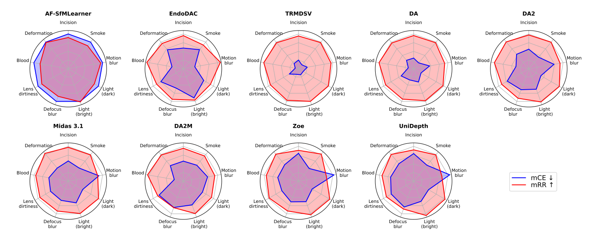

We present RoDEM (Robust Depth Estimation in MIS), a comprehensive benchmark for evaluating the accuracy and robustness of monocular single-shot depth estimation (MoSDE) methods in MIS. RoDEM introduces nine representative perturbations—seven image perturbations (smoke, bleeding, lighting variations, defocus, motion blur, and lens dirtiness) and two surgical gestures perturbations (organ deformation and incision)—and provides an ex-vivo dataset of 29,803 laparoscopic RGB-D images of sheep organs (liver, kidney, heart-lung). Using carefully defined metrics, RoDEM benchmarks nine state-of-the-art MoSDE methods under realistic surgical conditions.
Samples from RoDEM dataset



Radar charts with perturbation error and resilience rate for the nine benchmarked methods.

Representative images illustrating the seven identified perturbations and their respective severity levels, selected from a total of 9,035 images in the kidney setting of the RoDEM dataset.

Samples of laparoscope images, along with their corresponding depth maps and point clouds, for the three settings used in the RoDEM dataset.
Poster
BibTeX
@article{YourPaperKey2024,
title={The RoDEM Benchmark: Evaluating the Robustness of Monocular Single-shot Depth Estimation Methods in Minimally-Invasive Surgery},
author={Rasoul SHARFIAN, Navid RABBANI and Adrien BARTOLI},
journal={IPCAI/IJCARS},
year={2025},
}